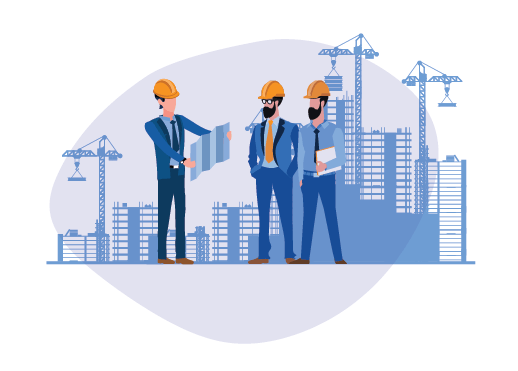

Construction Technology and Management Blog

Construction Technology and Management is an important application of science, which plays a major
role in the social and economic development of modern society. In order to perform this role effectively, construction engineers require a broad understanding of scientific principles, knowledge of materials, applied knowledge of civil engineering and the capacity to analyse and synthesise in order to arrive at solutions. This requires research, team working, and leadership and business skills. And it has to be situated in a social, economic and environmental context that reflects the reality within which the construction engineer and manager finds him/herself.
In Ethiopia, Construction Technology and Management has great role to play in supporting economic
development and contribute towards the improvement of the living standard of the people. This role
and contribution input is at different geospatial scales, from the Federal to the local, in both an
urban and a rural context. As a country that is moving into a rapid phase of growth, the contribution
that construction technology and management can make, to ensure that this growth is sustainable; is
a particularly important one. It is therefore of vital importance that construction technologists and
managers are prepared, professionally, to met this growth challenge and contribute to sustainable
development.